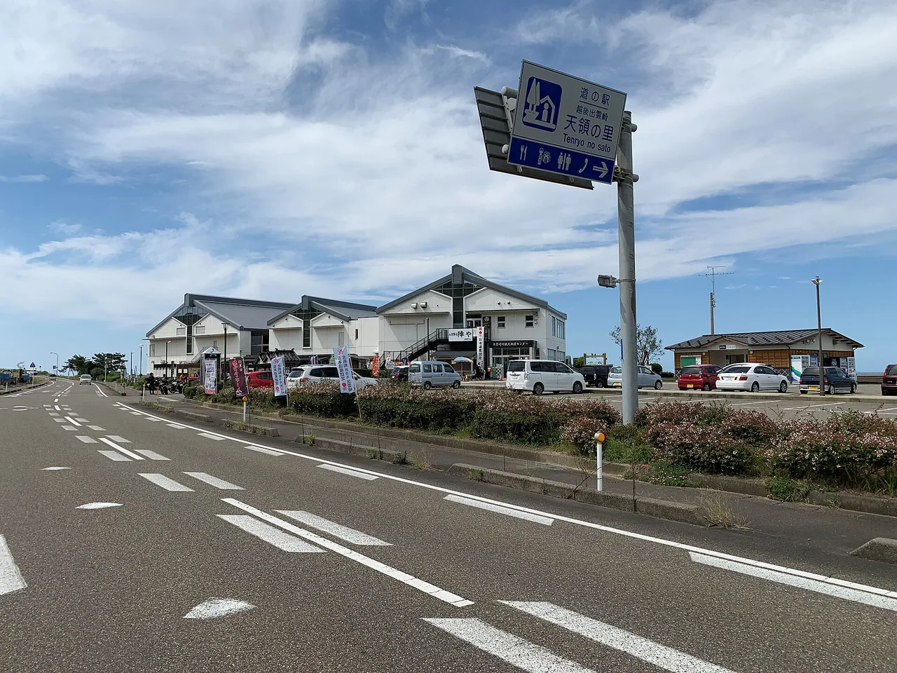

Michi-no-eki stamp rally: perangko stasiun pinggir jalan di Japan
Perjalanan darat di Japan hadir dengan permainan koleksi tersendiri. Setiap michi-no-eki (道の駅) — stasiun pinggir jalan resmi yang terdaftar oleh pemerintah, lengkap dengan makanan lokal, hasil pertanian, dan area istirahat — menyimpan sebuah stempel gratis, dan banyak pengemudi merencanakan seluruh rute mereka untuk mengumpulkannya. Ada juga koleksi berbayar: michi-no-eki kippu, kartu bergaya tiket kereta kecil untuk setiap stasiun. Panduan ini membahas apa itu stasiun-stasiun tersebut, stempel gratis, kippu, cara kerja stamp rally perjalanan darat, dan bahasa Jepang yang akan Anda gunakan sepanjang perjalanan.

Apa itu michi-no-eki
Sebuah michi-no-eki (道の駅, secara harfiah "stasiun jalan") adalah tempat istirahat pinggir jalan resmi yang terdaftar oleh Kementerian Pertanahan, Infrastruktur, Transportasi dan Pariwisata Japan (MLIT). Program ini dimulai pada tahun 1993, dan stasiun-stasiun diberi nomor sesuai urutan penetapannya. Per tahun 2024, terdapat sekitar 1.220 stasiun terdaftar di seluruh prefektur — anggap angka ini sebagai gambaran sementara, karena stasiun baru ditambahkan setiap tahun.
Tidak seperti area istirahat jalan tol biasa, michi-no-eki dibangun untuk memperkenalkan daerahnya: pasar petani dengan hasil bumi lokal, restoran yang menyajikan hidangan khas daerah, oleh-oleh, toilet dan parkir 24 jam yang bersih, serta sering kali terdapat titik pandang atau atraksi kecil. Karakter regional itulah yang membuat mengoleksinya menjadi menyenangkan — setiap pemberhentian adalah sudut Japan yang berbeda.
Stempel gratis di setiap stasiun
Setiap michi-no-eki memiliki stempel (スタンプ) tersendiri, gratis untuk digunakan, biasanya berada di dekat meja informasi atau pintu masuk. Seperti stempel stasiun kereta, setiap desain menampilkan nama stasiun dan sesuatu yang khas lokal — sebuah gunung, maskot, atau tanaman terkenal. Para kolektor menyimpannya dalam buku stamp rally khusus sehingga halaman-halamannya membentuk peta dari jalan-jalan yang telah mereka lalui.
- Gratis dan swalayan — temukan stempelnya, tekan ke buku Anda, tidak perlu membeli apa pun.
- Satu per stasiun — setiap stasiun terdaftar memiliki desain uniknya sendiri.
- Bawa buku — buku stamp rally regional resmi tersedia, tetapi buku catatan apa pun bisa digunakan.
Parkir dan toilet sering kali buka 24 jam, tetapi toko dan area informasi tempat stempel berada mengikuti jam buka normal. Jika Anda tiba lebih awal atau terlambat, pastikan stempel dapat diakses — mungkin berada di dalam ruangan yang terkunci saat gedung tutup.
Tiket michi-no-eki kippu
Terpisah dari stempel gratis, banyak stasiun menjual michi-no-eki kippu (道の駅きっぷ) — kartu koleksi kecil bergaya tiket kereta lama, dicetak dengan nama stasiun dan sering kali disertai cap tanggal. Tidak seperti stempel gratis, kippu adalah barang berbayar yang dibeli di kasir, dan telah menjadi hobi koleksi tersendiri dengan varian regional dan edisi khusus.
- Berbayar — dikenakan biaya kecil per tiket, dibeli di toko atau kasir stasiun.
- Tidak di semua tempat — hanya stasiun yang berpartisipasi yang mengeluarkannya, sehingga jumlahnya lebih sedikit dibanding stempel gratis.
- Kenang-kenangan fisik — kartu bergaya tiket ini mudah disimpan dan dipajang, seperti koleksi tiket kereta.
Karena kippu bersifat opsional dan spesifik per stasiun, jangan berasumsi setiap michi-no-eki memilikinya. Jika mengoleksi tiket adalah tujuan Anda, periksa stasiun mana saja di rute Anda yang berpartisipasi sebelum berangkat.
Cara kerja stamp rally
Stempel gratis secara alami berubah menjadi sebuah stamp rally (スタンプラリー). Daerah-daerah menerbitkan buku rally yang mencakup michi-no-eki mereka, dan para pengemudi berusaha mengumpulkan stempel dari sebanyak mungkin stasiun; isi cukup banyak dan Anda bisa menyerahkan buku tersebut untuk mendapatkan hadiah atau sertifikat dalam kampanye yang berpartisipasi. Banyak orang menjalankan rally semata-mata demi perjalanan itu sendiri.
| Langkah | Yang Anda lakukan | Catatan |
|---|---|---|
| 1 | Rencanakan rute berkendara melewati beberapa michi-no-eki | Mereka berkelompok di sepanjang jalur nasional dan jalan pemandangan |
| 2 | Dapatkan buku stamp rally (atau bawa buku catatan) | Buku rally regional mencakup sekumpulan stasiun lokal |
| 3 | Di setiap stasiun, tekan stempel gratis | Biasanya di dekat meja informasi atau pintu masuk |
| 4 | Opsional: beli michi-no-eki kippu | Hanya di stasiun yang berpartisipasi |
| 5 | Lengkapi satu set rally untuk mendapatkan hadiah, jika tersedia | Ikuti aturan pengiriman kampanye yang bersangkutan |
Ada lebih dari seribu stasiun terdaftar dan daftarnya terus bertambah setiap tahun, jadi daripada mencetak angka yang cepat usang, gunakan sumber daya stasiun pinggir jalan resmi untuk memetakan stasiun-stasiun di sepanjang jalan yang akan Anda lalui.
Apa yang akan Anda temukan di sana
Sebagian daya tariknya adalah bahwa berhenti untuk stempel juga berarti makan siang, camilan, dan belanja oleh-oleh. Sebuah michi-no-eki yang khas memiliki:
- Pasar petani — hasil bumi lokal yang baru dipetik, sering kali lebih murah dan lebih segar dari supermarket.
- Restoran atau stan makanan — hidangan khas daerah, mulai dari soba hingga makanan laut hingga soft-serve dengan rasa lokal.
- Oleh-oleh lokal — camilan dan kerajinan khas daerah yang tidak akan Anda temukan di Tokyo.
- Fasilitas istirahat — parkir dan toilet 24 jam, dan terkadang titik pandang, pemandian air panas, atau area bermain.
Hal ini menjadikan michi-no-eki sebagai sahabat terbaik pengemudi bahkan jika Anda tidak pernah mengumpulkan satu pun stempel — dan alasan nyata untuk menjelajahi pedesaan Japan dengan mobil, bukan hanya kota-kotanya dengan kereta.
Beberapa tautan di atas adalah tautan afiliasi. Kami mungkin mendapatkan komisi tanpa biaya tambahan bagi Anda. Kami hanya mencantumkan layanan yang akan kami gunakan sendiri.
Bahasa Jepang yang sebenarnya akan Anda gunakan
Beberapa kata membantu di kasir saat Anda bertanya tentang stempel atau kippu.
| Bahasa Jepang | Cara baca | Arti |
|---|---|---|
| 道の駅 | michi no eki | stasiun pinggir jalan — secara harfiah "stasiun jalan" |
| スタンプ | sutanpu | stempel gratis di setiap stasiun |
| 道の駅きっぷ | michi no eki kippu | kartu koleksi bergaya tiket berbayar |
| スタンプラリー | sutanpu rarī | stamp rally — kampanye pengumpulan stempel |
| 直売所 | chokubaijo | pasar petani / stan penjualan langsung |
| 特産品 | tokusanhin | produk khas lokal |
| 営業時間 | eigyō jikan | jam buka — periksa sebelum berhenti terlalu pagi atau terlambat |
| ありますか? | arimasu ka? | "Apakah ada …?" — mis. きっぷはありますか? |
Ingin kata-kata ini mudah diingat? Kuis pertempuran JLPT gratis melatih kosakata perjalanan dan budaya seperti ini dengan pengulangan berjarak.
Stempel stasiun pinggir jalan secara alami berpadu dengan permainan koleksi berbasis lokasi lainnya di Japan: stempel stasiun kereta →, kartu manhole →, penutup manhole Pokéfuta →, dan goshuin →. Satu rute berkendara bisa mengumpulkan beberapa sekaligus.
Pertanyaan umum
T. Apa itu michi-no-eki?
J. Michi-no-eki (道の駅, "stasiun jalan") adalah tempat istirahat pinggir jalan resmi yang terdaftar oleh MLIT Japan sejak 1993. Setiap stasiun memiliki pasar petani, restoran, oleh-oleh, serta parkir dan toilet 24 jam, dan dibangun untuk memperkenalkan daerahnya. Per tahun 2024, terdapat sekitar 1.220 stasiun terdaftar di seluruh negeri.
T. Apakah stempel michi-no-eki gratis?
J. Ya. Setiap stasiun memiliki stempel swalayan gratis tersendiri, biasanya di dekat meja informasi atau pintu masuk. Anda menekannya ke buku catatan atau buku stamp rally Anda — tidak perlu membeli apa pun.
T. Apa itu michi-no-eki kippu?
J. Ini adalah kartu koleksi berbayar bergaya tiket kereta lama, dicetak dengan nama stasiun dan sering kali disertai tanggal. Tidak seperti stempel gratis, Anda membelinya di kasir, dan hanya stasiun yang berpartisipasi yang mengeluarkannya, sehingga jumlah koleksinya lebih sedikit.
T. Bagaimana cara kerja stamp rally?
J. Daerah-daerah menerbitkan buku rally yang mencakup stasiun-stasiun mereka; Anda mengumpulkan stempel dari sebanyak mungkin stasiun, dan melengkapi satu set dapat menghasilkan hadiah atau sertifikat dalam kampanye yang berpartisipasi. Banyak orang sekadar menikmati perjalanannya.
T. Bisakah saya mengumpulkan stempel 24 jam sehari?
J. Tidak selalu. Parkir dan toilet sering kali buka 24 jam, tetapi stempel biasanya berada di dalam ruangan dekat toko atau area informasi, yang mengikuti jam buka normal. Periksa jam buka jika Anda tiba terlalu pagi atau terlambat.
T. Apakah saya perlu mobil?
J. Secara praktis, ya — michi-no-eki dibangun untuk pengemudi dan berkelompok di sepanjang jalan tol dan jalan pedesaan. Beberapa bisa dicapai dengan bus, tetapi rally ini benar-benar cocok sebagai perjalanan darat.